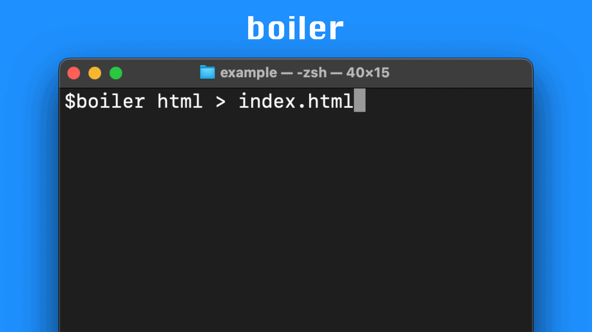

Empower your developers with a simple CLI that outputs clean, consistent boilerplate from a team-maintained repo — no templates, no mess, just best practices in one command.
Your team wastes time rewriting the same setup code—or worse, doing it five different ways. Boiler fixes that with a shared, source-controlled repo of copy‑pasteable patterns your team can trust.
Developers run a single command like boiler go/http to get clean, ready-to-use boilerplate. Want it in a file? Just redirect the output: boiler go/http >> main.go.
Stop wasting cycles on code review nitpicks. Standardize with a tool your team will actually use. Boiler brings consistency without the overhead.
Boiler is just $399 — a one-time payment for your entire team.
Book a quick walkthrough — no pressure, just a tour of how Boiler works.